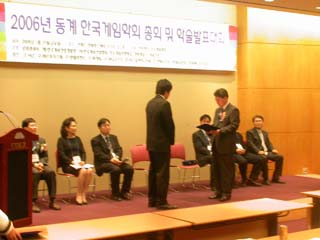

Win the Excellent Paper Award
Jong-Hyun Yoon and Jong-Seung Park won the Excellent Paper Award at the 2006 Annual Winter Conference of Korean Game Society held in Seoul, January 20, 2006, for their paper entitled "Hand Gesture Interface for Augmented Reality Games".

In the paper, they proposed a practical hand gesture-based interface, which can be applicable to many augmented reality game applications. They also demonstrated two practical applications embedding the interface: a gesture-based music player and an augmented reality basketball game.Award ceremony was held on Jan. 20th, 2006 at COEX conference center in Seoul. Mr. Yoon, as a representative, received a certificate of honor and prize money of 500,000 Won.
Entertainment Computing Laboratory